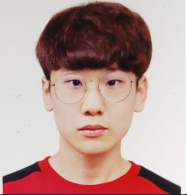
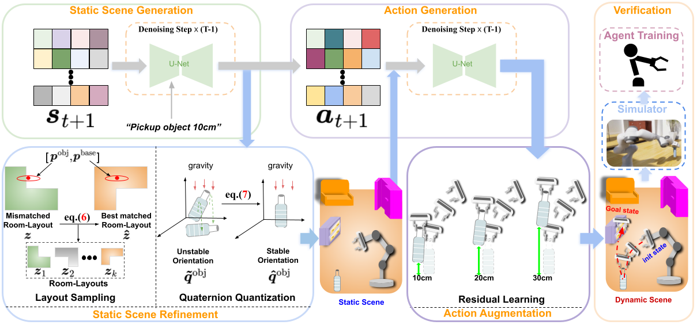
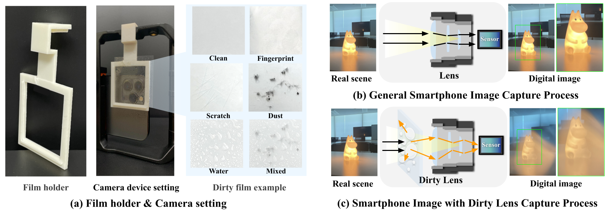
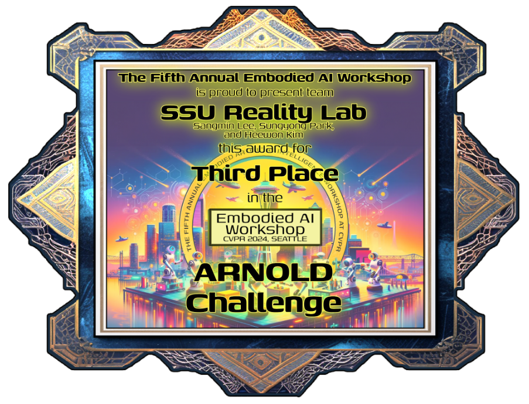

MS Student in Digital Media (Artificial Intelligence) at Soongsil University
#602, 50 Sadang-ro, Dongjak-guejqdl010 at gmail dot com
I am a master's student at the Reality Lab in the Department of Digital Media at Soongsil University, advised by Prof. Heewon Kim.
My research explores scalable data generation and utilization in robotics, with a recent focus on foundation models for robotic manipulation.
My research centers on embodied AI systems that perceive and interact effectively in challenging real-world settings. Key areas of interest include:

Sangmin Lee*, Sungyong Park*, Heewon Kim, IEEE/CVF Computer Vision and Pattern Recognition Conference (CVPR), 2025
Paper Slides
@inproceedings{lee2025dynscene,
title={DynScene: Scalable Generation of Dynamic Robotic Manipulation Scenes for Embodied AI},
author={Lee, Sangmin and Park, Sungyong and Kim, Heewon},
booktitle={Proceedings of the Computer Vision and Pattern Recognition Conference},
pages={12166--12175},
year={2025}
}

Sooyoung Choi*, Sungyong Park*, Heewon Kim, AAAI Conference on Artificial Intelligence, 2025
PDF Website Talk Slides
@inproceedings{choi2025sidl,
title={SIDL: A Real-World Dataset for Restoring Smartphone Images with Dirty Lenses},
author={Choi, Sooyoung and Park, Sungyong and Kim, Heewon},
booktitle={Proceedings of the AAAI Conference on Artificial Intelligence},
volume={39},
number={3},
pages={2545--2554},
year={2025}
}
Dowon Kim, Chaewoo Lim, Sungyong Park, Sangmin Lee, Heewon Kim
CVPR 2025 Embodied AI Workshop

Sangmin Lee, Sungyong Park, Heewon Kim
CVPR 2024 Embodied AI Workshop